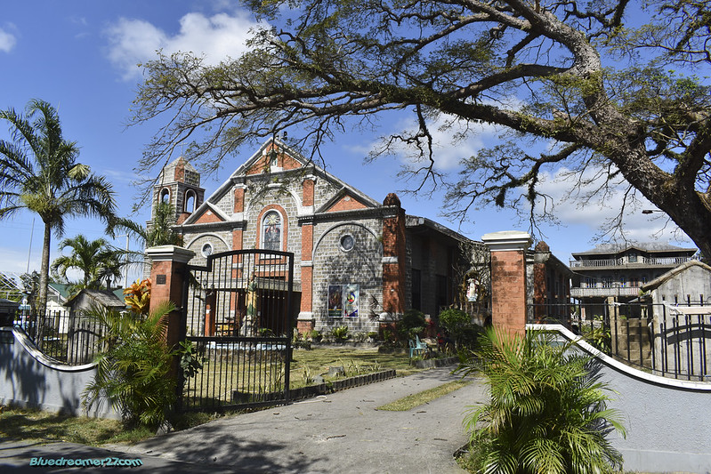
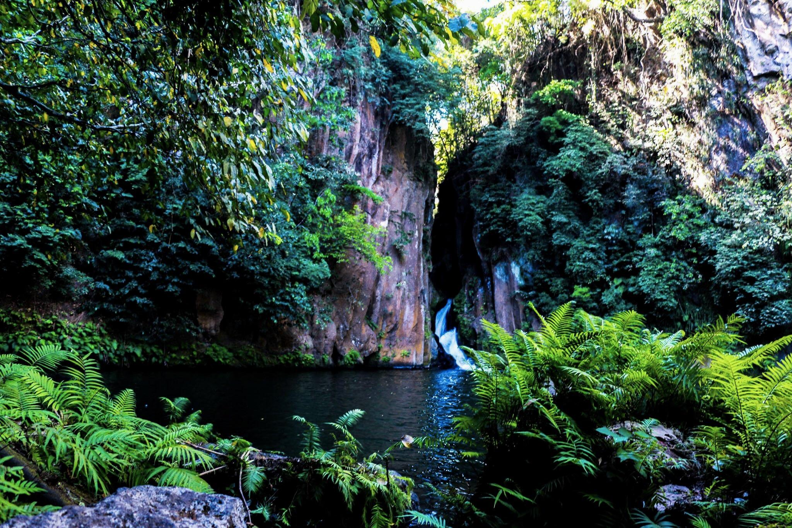
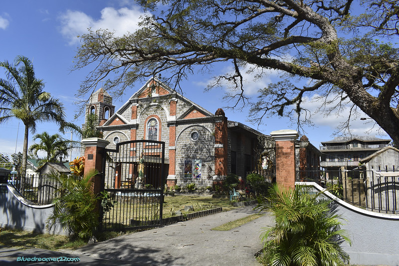
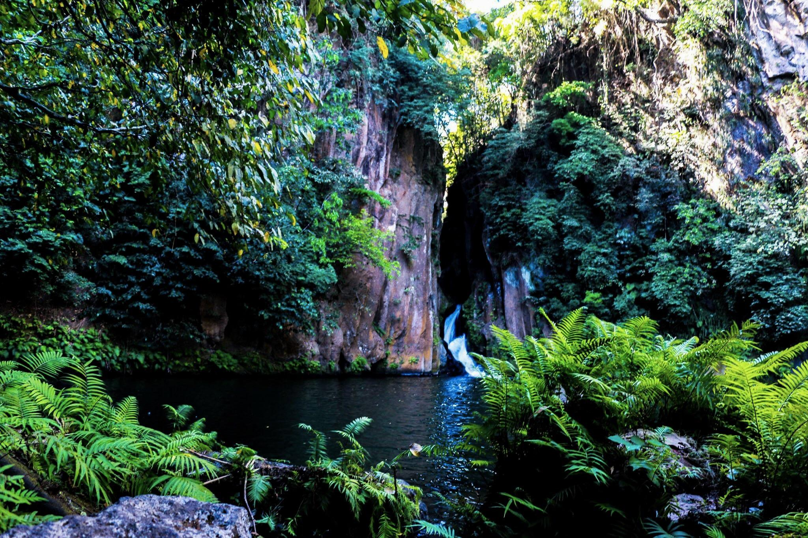

Discover the Hidden Gems of Bailen: An Upland Paradise in Cavite
Welcome to Bailen, an upland town in Cavite, now proudly known as General Emilio Aguinaldo. Nestled 82 kilometers from Metro Manila, this tranquil municipality offers a serene environment and fresh air, perfect for relaxation. However, there is so much more to Bailen than meets the eye.
Join me as we uncover its unique and hidden beauty. My blog is dedicated to introducing you to my hometown, a place that may be unfamiliar to many. When I mention Bailen to those living in bustling cities like Dasmarinas City, the common question is, "Where is Bailen?" This is my chance to proudly showcase my native land.
Bailen is bordered by Maragondon to the north and east, Alfonso to the south, and Magallanes to the west. Despite its small size, with 14 barangays (4 urban and 10 rural), Bailen holds many secrets waiting to be discovered. Let's explore the extraordinary ripple effects of this seemingly small town.
 


